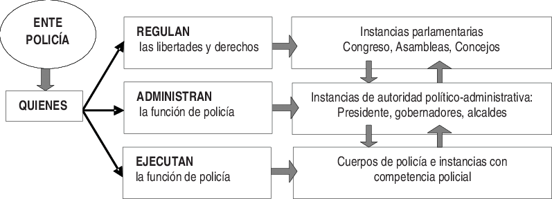
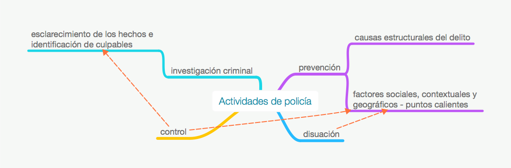
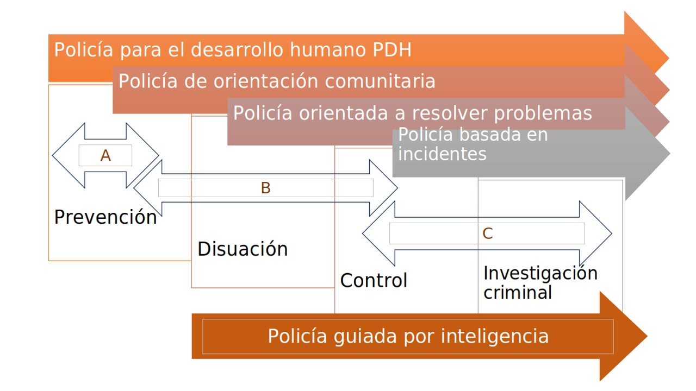

Apéndice 1. Fundamentos de la Policía para el Desarrollo Humano (PDH)
La participación comunitaria es una prioridad para mejorar las condiciones de seguridad ciudadana, en Latinoamérica y el Caribe. Las políticas consideradas de mano dura han deteriorado las conexiones y confianza de la comunidad con la policía, han desencadenado más mano dura y obligando a que el control del crimen se convierta en una cesión innecesaria de libertades y derechos de los ciudadanos (–UNDP–, 2012). No obstante, no ha tenido un impacto positivo a largo plazo en la disminución del delito y la mejora del desarrollo humano. Como se ha venido explicando, la seguridad ciudadana debe permitir el desarrollo humano, mediante la prevención del delito y la violencia.
Por lo cual, se pretende hacer una aproximación de, lo que debería ser, una policía que funcione entorno a la mejora de las condiciones de seguridad ciudadana, para que cada persona o habitante pueda utilizar todo su potencial y tener oportunidad de cumplir sus expectativas. Para aproximar, conceptualmente, el actuar policial del ente policía y de los cuerpos de policía, a continuación, se explicará cómo la prevención de la violencia y el delito, el desarrollo humano y la ciencia de policía se articulan para la seguridad ciudadana.
Fundamentos filosóficos
La herencia cultural, política y social europea, en América Latina y el Caribe (ALC), afectan, sustancialmente, la forma en que se definen las cosas, por ello, se tomará la concepción de la nueva ciencia de policía como aquella identificada en el Estado de Derecho, puesto que la considerada, antigua ciencia de policía, se refiere al estado absolutista o monárquico de los siglos XVII y XVIII (Suárez, 2009). En efecto, se podría entender como “policía” el concepto jurídico-político cuyo significado se refiere a la regulación del comportamiento humano, mediante la reglamentación de las costumbres, por medio de sistemas normativos, la concepción administrativa de la vida social, el manejo de los asuntos públicos, y, también, es entendida como el cuerpo, institución u organización que trabaja diariamente en las calles (SUÁREZ, 2009). Igualmente, el autor expresa que policía es una palabra con una historia de más de veinte siglos. Desde su raíz grecolatina se ha explicado su etimología con relación a: polis = ciudad, Estado; politeia = Estado, constitución, régimen político, república, cosas cívicas, ciudadanía; y politiké = arte de gobernar; de este modo, la antigua politeia griega se latinizó como politia y de ella nació la policía.
Según las definiciones anteriores y teniendo en cuenta que el presente documento pretende centrar conceptualmente la Policía para el Desarrollo Humano (PDH); la base teórica y metodológica será bajo la ciencia de policía, que se puede definir como el estudio sistemático y metódico, sus causas, evolución y señalamiento de sus principios, que comprende el estudio de un objeto: el ente policía y de un fin: la convivencia (LONDOÑO, 2014). En ese sentido, es un concepto tan dinámico y diverso como número de culturas y épocas que se tengan presentes.
Se debe tener en cuenta, como expone SUÁREZÁLVAREZ(2009), que en ALC la ciencia de policía ha sido enfocada principalmente a los cuerpos de policía, la administración pública y algunas aproximaciones desde el derecho; por ello, se busca ampliar esta perspectiva de la ciencia de policía, para abarcar los ámbitos políticos, jurídicos, administrativos y sociales necesarios para atacar las causas estructurales de la violencia y el delito mediante la prevención buscando el desarrollo humano, a través del uso de la filosofía y estrategia de la Policía para el Desarrollo Humano (PDH) que se propone en el presente trabajo.
La filosofía, en sentido estricto es disciplina metódica del arte de pensar en aquello necesario y suficiente para imprimir sentido y dirección a la acción humana (suárez, 2009). La filosofía en el actuar policial de los funcionarios que regulan, administran y ejecutan la función de policía, pueden guiar su actuar, como se cita a continuación:
“Suele decirse que lo policial corresponde al”sentido común”, queriendo significar con esto que una solución policial debe ser tan justa, tan imparcial, tan sabía que no genere prejuicio, o si indispensablemente debe ocasionarlo, lo haga con tal sentido de las proporciones, que los afectados lo acepten de buenas maneras, porque no denota un atropello, sino la necesidad imperiosa de limitar derechos individuales en aras del interés común”. (PeñA, 1998, p. 42).
La filosofía policial, sobre todo, implica la participación activa y comprometida de diferentes actores, como: el empresarial y productivo, los entes del Estado y los ciudadanos que a su vez son los actores principales en la prevención y abordaje integral de los problemas de seguridad. Pero, una filosofía comunitaria implica profundas transformaciones, en los cuerpos de policía, en términos de cambio de pensamiento, cultural, organizacional y de relaciones y responsabilidades con la PDH, la ciudadanía, el Estado y la sociedad civil. Igualmente, implica que las estrategias sean sostenibles, es decir, continuas, planificadas y financiadas; y participen activamente en la atención y resiliencia de las crisis.
En este entendido, la policía para el desarrollo humano, junto con autoridades políticas y la sociedad civil, debe prevenir y contrarrestar integralmente los problemas de seguridad y convivencia siendo enfáticos en la corresponsabilidad de comprender la génesis, evolución y proyección de los factores que escalan violencia y conflictividad social, para poder orientar las estrategias y anticipar los riesgos futuros (CArdoso, 2011), que afectarían negativamente la seguridad humana y, principalmente, la convivencia para el desarrollo humano.
¿Qué es el ente policía?
Se puede entender, desde el trabajo de SUÁREZÁLVAREZ(2009) quien en su obra sintetiza diferentes autores, pensamientos históricos y contemporáneos de la ciencia de policía, realizando un estado del arte apropiado para articular esta ciencia policial con el desarrollo humano, como el fenómeno complejo histórico-político, significando el ser y los modos de ser del fenómeno policial que poseen diversos sentidos y dimensiones, pero, este ente policía, debe ser llevado a la realidad, para que facilite el entendimiento de los problemas sociales para que este conocimiento, creado, permita a la PDH atacar las causas estructurales de la violencia y el delito.
Por ello, el Ente Policía tiene una estructura sistémica y dinámica por quienes regulan las libertades y derechos de las personas por quienes administran gobernadores y alcaldes, y ejecutan la función de policía o realizan actividad de policía los cuerpos de policía, es decir, estos últimos tan solo son una parte del ente policía. Igualmente, debe concebir que el fin de la ciencia de policía es la convivencia, integrada por sus cuatro categorías: seguridad, tranquilidad, moralidad y ecología, aunque la movilidad se está convirtiendo en una categoría que está afectando sustancialmente la convivencia ciudadana; así, el ente policía deba aumentar su conocimiento multidimensional sobre las causas y efectos de tan complejas realidades sociales (SUÁREZ, 2009), este tipo de conocimiento debe ser enfocado a las realidades locales donde se afecta la convivencia y se atacan las causas estructurales del delito y la violencia.
 {#Estructura del ente policía}
Además de lo anterior, suárez álvArez (2009) se refiere a los diferentes sentidos del ente de policía, los cuales son mencionados de la siguiente manera:
Sentido multívoco: policía es una palabra polisémica o de múltiples significados y connotaciones,
Significado político: garante del Estado de Derecho.
Significado jurídico: mantenimiento del orden jurídico.
Significado ético: deontológico, principios y valores.
Significado administrativo: cuerpo, institución u organización.
Significado gestión pública: el ente policía se concibe más como un ejecutor de una política pública prevaleciente en un momento dado.
Significado cultural: es el producto de lo socialmente aceptado.
Significado teológico: el ente policía asociado fuertemente a la idea de seguridad cuando en realidad su eje central y fin último es la convivencia.
Significado ecológico: protección, vigilancia, control y cuidado de los recursos naturales y la salubridad.
Significado práctico: connotaciones posibles con los cuales se relaciona el ente policía desde el punto de vista pragmá- tico: función, fuerza, actividad, servicio, estrategia, control, estructura, táctica, operativos, etc.
Sentido equívoco: corresponde al no-deber-ser o todo aquello que las sociedades deben evitar de sus policías, connotaciones negativas como abuso de poder, corrupción, pérdida de legitimidad, terror, autoritarismo y represión entre otros.
Sentido unívoco: el Ente Policía no es un fin, sino un medio. Si el ente policía está compuesto por quienes regulan las libertades públicas, quienes administran y ejecutan la función pública; entonces lo unívoco del ente policía se sintetiza en dos palabras: convivencia y legitimidad, en relación con una visión humanista en la cual prevalece el respeto y protección de la vida y correlativamente el respeto de todos los derechos, es a partir de estos principios como este planteamiento concibe el ente policía objeto de la ciencia policial.
¿Cuál es el fin de la policía?
El fin de la policía es la convivencia (en algunas ocaciones se puede entender como orden público), la cual posee cuatro categorías: seguridad, tranquilidad, moralidad y ecología. De la misma manera, la convivencia tiene diversas aproximaciones teóricas como la convivencia en el sentido clásico, convivencia ciudadana o convivencia pacífica, pero para fines de la PDH, como parte del Ente Policía, la convivencia debe contribuir al desarrollo humano, entendido como la satisfacción de las necesidades humanas básicas o fundamentales, por medio de las cuales una persona logra sostenimiento vital material y realiza sus aspiraciones de crecimiento espiritual, individual, social, educacional, económico, cultural entre otros aspectos (Policía Nacional de Colombia, 2010).
La convivencia tiene, de igual forma, relación con lo delictual, pues la función policial es preventiva y auxiliar; de acuerdo con las libertades individuales es protectora, y en relación con los deberes cívicos que se cumplen en la calle y sitios abiertos al público, es educativa (PINEDA, 2011). Un ejemplo son los cuerpos de policía que abarcan diferentes roles que, en su mayoría, no son represivos como podría considerarse de primera vista, teniendo en cuenta que estos muchas veces son la primera representación del Estado.
Siguiendo de nuevo con la obra de suárez álvArez (2009), la convivencia, en el sentido clásico, tiene una causa natural y una causa moral; causa natural referida a la necesidad que se tiene de los demás, para poder vivir materialmente, porque solo a través de ellos, es posible satisfacer las necesidades esenciales para la subsistencia en cuanto proveen y facilitan alimento, dinero, trabajo, protección, etc. De igual manera, la convivencia posee una casusa moral, la necesidad que se tiene de los demás, para vivir según los valores, virtudes, creencias, símbolos o significaciones que se comparten y otorgan sentido o razón de ser a la existencia humana: la solidaridad, el afecto, la amistad, la sinceridad, la participación, el entendimiento, la humildad, el respeto y la tolerancia entre otros.
La convivencia ciudadana debe ser entendida como una forma tangible en que se manifiesta la seguridad pública, porque determina el grado básico de organización social -obediencia de normas- y de confianza en las instituciones o en quienes administran los sistemas de justicia, reconocida por su legitimidad. Por eso, la convivencia pacífica está en función de la Paz, es decir, no admite al conflicto armado interior de un país o aquello que se denomina “guerra civil”, también contiene implícitamente uno de los mecanismos psicosociales, claves, para el sostenimiento de la sociedad: la confianza.
De lo anterior, se puede proponer que la convivencia que servirá de fin para la Policía para el Desarrollo Humano PDH, es que mediante la participación de la sociedad, en su conjunto, se creen relaciones estrechas con la institucionalidad legitima del Estado de Derecho, para crear condiciones necesarias que permitan que cada persona pueda satisfacer sus necesidades de desarrollo humano, a través de la seguridad ciudadana, focalizada en la prevención de la violencia y el delito.
Reducciendo también las causas estructurales que los generan como la tranquilidad manifestada en la confianza de la protección y respeto de los derechos, así como la anticipación de las crisis y la mitigación de sus efectos, la moralidad para la construcción de una comunidad pacífica que respete al otro y al Estado.
Finalmente, a través de la ecología, para mejorar las relaciones con nuestro entorno o ambiente y velar por el uso el actual sin comprometer la supervivencia de las generaciones futuras. Se podría decir que es una convivencia para el desarrollo humano para ALC.
¿Cuál es la metodología a utilizar?
La ciencia de policía se basa en siete principios metodológicos (suárez, 2009), los cuales serán articulados con la PDH y su enfoque a nivel local, así:
Transdisciplinariedad: vinculación de diferentes disciplinas y expertos es necesaria para encontrar soluciones a los problemas de las comunidades, sean de la misma comunidad o externos, puesto que, los problemas son diversos en términos de convivencia Y podrían afectar negativamente la seguridad ciudadana. Entonces, el estudio de problemáticas y soluciones debe realizarse desde la perspectiva jurídica, económica, social, ambiental, estadística, con el apoyo de tecnologías de la información y la comunicación, es decir, ciencias sociales, jurídicas, administrativas, básicas, tecnologías y técnicas.
Pluralismo metodológico: si bien, como se dijo anteriormente es necesario integrar varios saberes para llegar a afrontar un problema y proponer una solución, se quiere expresar la necesidad de articular los métodos más adecuados de cada disciplina, para diseñar, por ejemplo, la solución a un problema, como: las riñas en vía pública, asociadas al consumo de alcohol, que necesitan un estudio cultural del porque se solucionan los problemas con violencia; un estudio toxicológico, en el entendido de saber los efectos del licor que se vende a una población específica, y gestión pública para llevar a esa población los servicios de seguridad y de prevención del alcoholismo, entre otros.
Pertinencia: su prioridad es el proceso, toma de decisiones, del Ente Policía articulado, para que las acciones adaptadas solucionen los problemas y cumplan las expectativas esperadas, e indicando que responsabilidades, soluciones y diagnósticos de los problemas y, de esa forma, establecer políticas públicas, estrategias, programas, proyectos, etc.
Oportunidad: las soluciones deben llegar en el momento que se requieran y bien planificadas, de acuerdo con la anticipación de los eventos sean, de corto, mediano o largo plazo.
Precautelación: este principio es aplicable en la PDH, cuando se disponen los medios, infraestructuras necesarias y voluntades, para focalizarse en evitar que los eventos no deseados ocurran.
Anticipación: la policía, por esencia, es prospectiva, preventiva, pero la anticipación hace referencia a qué se debe hacer para que los eventos negativos no ocurran, existen diferentes formas de anticipar, verbigracia, pronósticos, la prospectiva estratégica, la inteligencia anticipativa estratégica (Veille Anticipative Strategique traducción del francés), entre otros. Anticipar busca, también, que los hechos negativos no afecten a las personas o grupos de personas en atención al concepto de seguridad humana. Por ello, esta anticipación debe per- mear el ente policía, proponiendo normatividad y políticas públicas para contrarrestar las amenazas identificadas.
Contextualización: en este principio cobra mucha importancia el enfoque global, es decir: piensa glocal, actual local, puesto que la aplicación de soluciones, por parte de la PDH, debe tener en cuenta las circunstancias políticas, sociales, culturales, tecnológicas y ambientales de una comunidad; por ello, el contexto es muy importante y se deben ajustar las acciones y soluciones al escenario donde se pretende actuar.
¿Qué tener en cuenta para hacer análisis?
Con el fin de entender los problemas locales de una comunidad y atacar las causas estructurales de la violencia y el delito, se propone utilizar el método cultural, para la investigación profunda y amplia que exige el desarrollo del conocimiento policial. Con esta teoría se pretende ordenar el extenso conjunto de cuestiones, para el entendimiento del investigador y no como reglas imprescindibles (LONDOÑO, 2014). Por ejemplo, para producir innovación local y prevenir sosteniblemente se requiere la producción de conocimiento que sirva, al ente policial, tomar decisiones y plantear políticas públicas y estrategias. Por ello, se deben tener en cuenta las siguientes perspectivas de análisis:
Análisis de la realidad cultural: para analizar los problemas de la competencia de la PDH, es necesario identificar la cultura de lo que se considera correcto e incorrecto, los valores y principios que promueven, y las creencias que estos tengan hacia la interpretación de su realidad. Esta cultura se analiza desde las organizaciones que componen la comunidad, como juntas de ciudadanos, organizaciones empresariales, grupos deportivos o hasta cuadras dentro de un barrio; así mismo interpretar las variables, que podrían afectar estas organizaciones en su conjunto.
Análisis histórico: todo problema y requerimiento ciudadano viene del pasado y de una historia previa que no se puede desconocer, cualquier actividad o solución por parte de la PDH debe tener en cuenta estas variables para entender el problema y ajustar sus acciones.
Análisis semántico-conceptual: si comprendemos la cultura y la historia de una comunidad, podremos realizar esta perspectiva de análisis en el entendido de que lo semántico-conceptual se refiere al uso del lenguaje, teniendo en cuenta que por medio de este se construye la realidad y se brinda validez a las cosas. Es de vital importancia la comunicación asertiva con lenguaje y mensajes, para que a la comunidad a quien se dirige, le sean fáciles de entender, con la información necesaria, oportuna y con credibilidad; con ello, entenderemos de mejor manera, sus expectativas y requerimientos, para la construcción de soluciones en un lenguaje común y sencillo.
Análisis jurídico-normativo: esta perspectiva de análisis busca entender el conjunto de normas jurídicas, que inciden en el comportamiento de la vida cotidiana de las personas y de las diferentes autoridades legítimas del Estado. Sin embargo, existen muchos comportamientos sociales que están fuera del ámbito jurídico, sin ser “actos ilícitos” (SUÁREZ, 2009) pero que informalmente o hasta ilegítimamente obligan a la persona a realizar ciertos comportamientos. Por esta razón, el análisis debe ir más allá, de esas normas, no formales, como las delictivas, ejemplo de estas, es la limitación de la libre locomoción por las fronteras invisibles interpuestas por un grupo criminal.
Análisis teleológico: es la perspectiva que busca entender el fin, propósito o la meta de toda sociedad y la relación de los actos humanos con este fin (LONDOÑO, 2014). Así, la PDH relaciona la convivencia y sus acciones con este entendimiento integrado y con las prioridades personales y grupales.
Aproximaciones desde el derecho de policía
Los sistemas de regulación social se privilegian sobre la reglamentación por parte de las autoridades en relación a las faltas de convivencia (MOCKUS, MURRAÍN & VILLA, 2012, p. 123) puesto que es a través de otros ciudadanos de su contexto como amigos, familiares o vecinos, quienes al ser afectados a no estar de a acuerdo con comportamientos, controlan e inciden en los de otras personas. Como se tratará más adelante, en la matriz de indicadores de la PDH, que busca ser educativo de la ciudadanía, para evitar el incumplimiento de las normas legales principalmente, pero acompañados de otros dos sistemas que proponen los autores: el sistema moral y el sistema cultural.
Desde la perspectiva del derecho de policía, los incumplimientos a estos tres sistemas se pueden convertir en motivos de policía, es decir, en algún hecho que amenace o perturben la convivencia (LLERAS, 2009), también explica que los motivos de policía comprenden tres categorías: seguridad del Estado (Estado de Derecho), seguridad de las personas y seguridad de las propiedades (seguridad ciudadana). Se podría entender que, de cierto modo, las causas estructurales de la violencia y el delito son motivos de policía, puesto, que, estas afectan la convivencia porque directamente tiene implicaciones en la credibilidad de las instituciones del Estado de Derecho y, estas, causan la violencia y el delito que motivan la actuación policial.
La PDH es preventiva de los comportamientos errados de las personas dentro de una comunidad, entonces, para evitar que se genere violencia o delitos cuando no se han atacado las causas estructurales efectivamente, y antes de usar el sistema de justicia penal, se debería fortalecer el uso de las contravenciones, la cuales, son infracciones típicas de policía y que están constituidas por la violación de una norma de carácter preventivo, encaminada a la protección y mantenimiento de la convivencia (llerAs, 2009). Esto es completamente diferente al derecho penal, que es represivo, y se aplica posterior a la comisión de un delito.
Las contravenciones o evolucionados a los comportamientos contrarios a la convivencia, también, buscan unas sanciones diferentes a la privación de la libertad, pues al aplicar una contravención, en el momento oportuno, se evitaría el uso de la violencia y el delito, porque aunque no ataca la causa estructural evita en comportamiento errado.
Por otro lado, el ente policía debería tener una base de datos con las contravenciones que realizan los ciudadanos, para que el Estado pueda establecer que reincidencia en contravenciones existe, las contravenciones más comunes y el concurso de varias contravenciones por los mismos comportamientos, permitiendo caracterizar a los ciudadanos que están en riesgo de cometer delitos o ejercer violencia.
Como se ha dicho y se reitera, el crimen cero puede ser una utopía; en estas condiciones el Ente Policía debe combinar la prevención a través de atacar las causas estructurales de la violencia y el delito, con la disuasión, el control y la investigación criminal, que también hacen parte de la PDH, pues, como dice llerAs PizArro (2009), no todas las personas están dispuestas a las normas de convivencia y el Estado debe valerse de medios materiales sin cuyo empleo seria irrisorio el poder preventivo; algunos abusan de sus libertades porque no tienen y otros porque tienen muchas.
Estrategias y modelos de policía
En América latina y el caribe se utilizan principalmente 4 estrategias para prestar el servicio de policía y diseño de planes.
Prevención: estrategias para reducir las causas estructurales de la violencia y el delito, al igual que, aquellos factores sociales, contextuales y geográficos, como los puntos calientes (hot-spot).
Disuación: estrategias en zonas geográficas para reducir el riesgo que se cometa violencia y delito, donde no implique la interacción con los ciudadanos, por ejemplo, cámaras de seguridad o presencia policial.
Control: estrategias que implican la interacción del ciudadano con los funcionarios de policía, por ejemplo, registros a personas y vehículos.
Investigación criminal: estrategias para desde la policía judicial desarticular redes del crimen organizado mediante capturas o incautación de bienes.

Complementario a lo anterior, existen ciertos modelos policía que abarcan diferentes ámbitos de acción, para contrarrestar la violencia y el delito, se debe tener en cuenta que estos no fueron concebidos para realidad de América Latina y el caribe. Por lo tanto, se pretende articular estos avances conceptuales y axiológicos para la PDH:
Policía de orientación comunitaria: una estrategia enfocada en la descentralización de la actividad policial, que permite a los comandantes locales y a los policiales, sobre el terreno, trabajar conjuntamente con las poblaciones de los barrios en el desarrollo e implementación de estrategias con la policía.
Policía orientada a resolver problemas (POP por su sigla en inglés): una estrategia policial que se centra en el uso de la evidencia, la investigación y contacto con la comunidad, para desarrollar estrategias preventivas y resolver problemas, en lugar de centrarse en responder a incidentes específicos después de ocurrido un crimen.
Policía guiada por inteligencia: una estrategia policial que se centra en la recolección de información detallada, sobre las actividades delictivas, con el fin de aunar esfuerzos en la aplicación de la Ley y la orientación de las patrullas de vigilancia (Cullompton, Devon and Portland, Oregón, Willan Publishing, 2003, citado en (UNODC & UN-HABITAT, 2011) Modelo que se centra en los esfuerzos de investigación y capacidad de inteligencia que tiene el cuerpo de policía, de cierta manera, instrumentaliza las relaciones que se desarrollan con la comunidad como proveedoras de información.
Policía basada en incidentes: estrategia que se centra en una presencia policial, regular, en barrios de alto estrato social y zonas empresariales, con una presencia policial intermitente en otros barrios (Cláudio C. beAtofilho, Bráulio fiGueredo Alves dA silvA and Ricardo tAvAres, citado en (UNODC & UN-HABITAT, 2011)). En ALC se puede interpretar mejor esta estrategia con la creación de grupos especializados policiales, que pretenden atacar como delito circunstancial que principalmente está presente en la opinión pública.
En este sentido la PDH pretende integrar las estrategias y actividades de policía -prevención, disuasión, control e investigación criminal- en el ente policía; puesto que ataca las causas de la violencia y el delito, pero se focaliza, principalmente, en la prevención, ver figura siguiente:

Según la figura anterior, se muestra gráficamente cómo se podrían articular las estrategias de policía y su influencia en las actividades de policía, igualmente, se proponen, en esta cadena de actuación policial tres zonas de actuar de la PDH.
Zona A: prevención, ataca las causas estructurales de la violencia y el delito, también puede estar clasificada dentro de la prevención primaria. Se puede deducir que la PDH, como estrategia del ente policía, apunta a las primeras acciones preventivas posibles.
Zona B: la policía para el desarrollo humano, también, ataca los factores sociales, contextuales y geográficos de la violencia y el delito, y los llamados puntos calientes, presentes en la prevención, disuasión y control, para ser concentrada a grupos concretos.
Zona C: busca el esclarecimiento de los hechos delictivos, ya consumados, y la identificación de los responsables de estos; está enfocada en el final del control e inicio de la investigación criminal, pero, esta zona, es muy importante, porque permite, en cierta forma, hacer prevención, puesto que, al esclarecer eficientemente los crímenes, se reduce la impunidad, que es una causa estructural. También está presente la prevención terciaria, que busca la no reincidencia de los criminales.
La policía, guiada por inteligencia, está enfocada en recopilar información, para ubicar las patrullas policiales en una jurisdicción y evitar la comisión de un delito. Es transversal y aporta a las otras estrategias en tratar de entender cómo se comportará el delincuente, pero no ataca las causas que llevan a este a realizar un delito; por ello, se ubica en las actividades de disuasión, control e investigación criminal.
Para hacer claridad, la PDH se diferencia, con el modelo policía para el desarrollo humano (PDH), en que pretende articular el ente policía -instituciones que regulan libertades y derechos, administran y ejecutan la función de policía- y no se limita a los cuerpos de policía.
De igual forma, entiende que para reducir las causas estructurales se requiere la participación, interacción e integración de muchas instituciones, organizaciones y la sociedad en general; así, aúna esfuerzos coordinadamente con el apoyo de la salud, la educación, y la economía, entre otros.